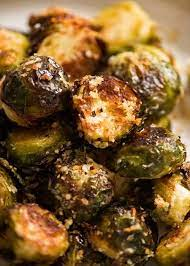

Brussels Sprouts Receipe

Description
Roasted Brussels sprouts are the crispy, smoky, and subtly sweet side dish that never fails to please. This simple 4-ingredient recipe pairs well with any protein and can easily be customized to accommodate a wide range of tastes.
Ingredients
- 1 ½ pounds Brussels sprouts, ends trimmed and yellow leaves removed
- 3 tablespoons olive oil
- 1 teaspoon kosher salt
- ½ teaspoon freshly ground black pepper
Steps
- Gather all ingredients.
- Preheat oven to 400 degrees F (205 degrees C).
- Place trimmed Brussels sprouts, olive oil, kosher salt, and pepper in a large resealable plastic bag. Seal tightly, and shake to coat.
- Pour onto a baking sheet, and place on center oven rack.
- Roast in the preheated oven for 30 to 45 minutes, shaking pan every 5 to 7 minutes for even browning. Reduce heat when necessary to prevent burning. Brussels sprouts should be darkest brown, almost black, when done. Adjust seasoning with kosher salt, if necessary. Serve immediately.
- Serve hot and enjoy!